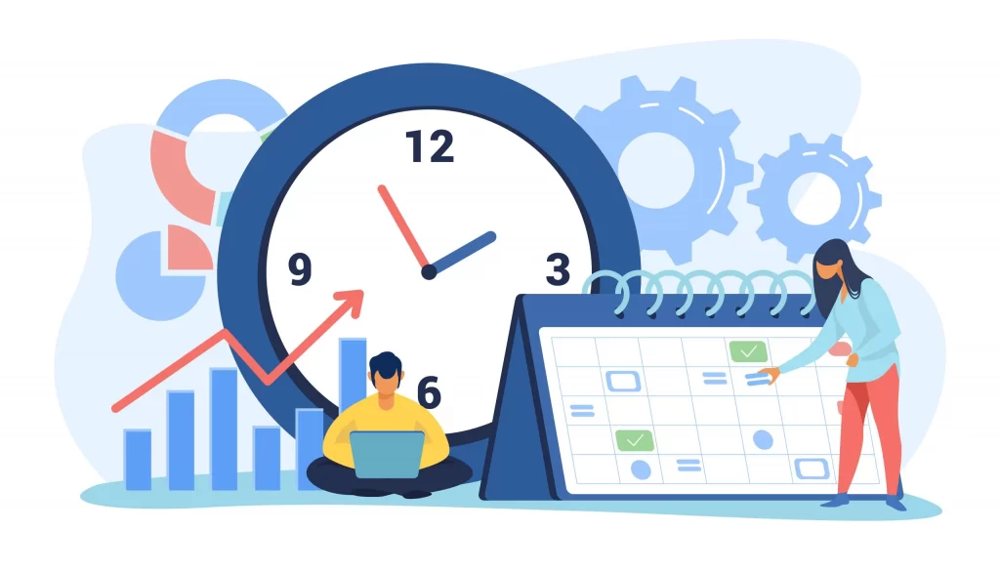

Planificación -- Desarrollo Continuo
La fase de planificación en DevOps no es una actividad aislada que ocurre solo al principio del proyecto. En DevOps, la planificación es un proceso continuo que involucra a todas las partes interesadas en el ciclo de vida del software: desarrolladores, operaciones, y, en algunos casos, clientes y usuarios finales.
Colaboración entre equipos: El equipo de desarrollo y el equipo de operaciones deben estar alineados desde el principio. Esto significa que no solo se planifican las funcionalidades y los requisitos del software, sino también cómo se gestionará la infraestructura, cómo se hará el despliegue y cómo se manejarán las actualizaciones.
Características Agiles: En DevOps, la planificación se hace de manera iterativa y agile. Esto permite realizar ajustes rápidos a medida que surgen nuevos requisitos o problemas. Se utiliza una metodología ágil como Scrum o Kanban para planificar el trabajo, priorizando lo que es más importante para el cliente y para la estabilidad del sistema.
Priorización de tareas: Durante la fase de planificación, se identifican y priorizan las tareas en función de los requerimientos del proyecto. Además, se asegura que el equipo tenga en cuenta las consideraciones operacionales, como la escalabilidad y la seguridad del sistema.